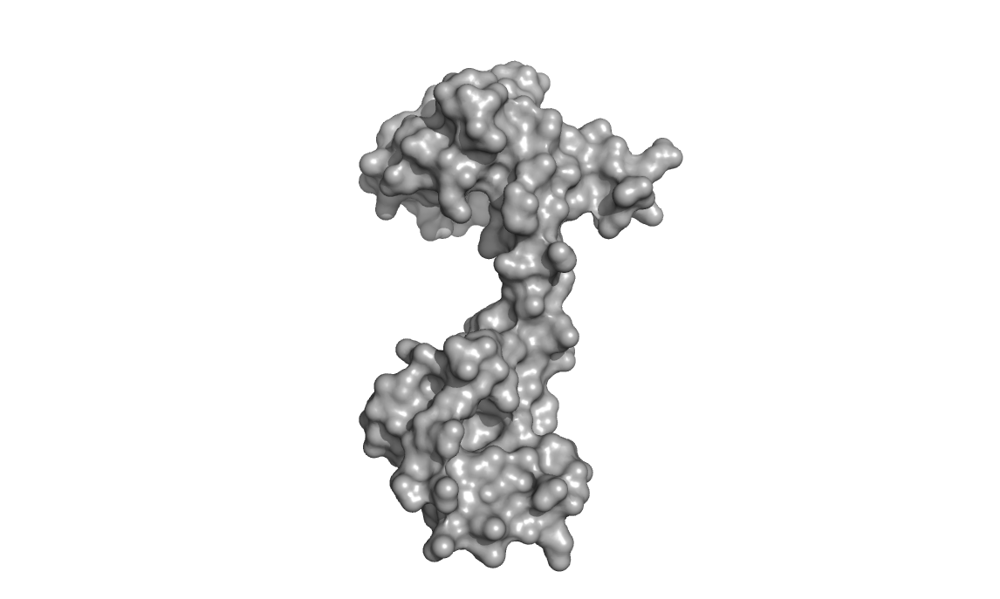
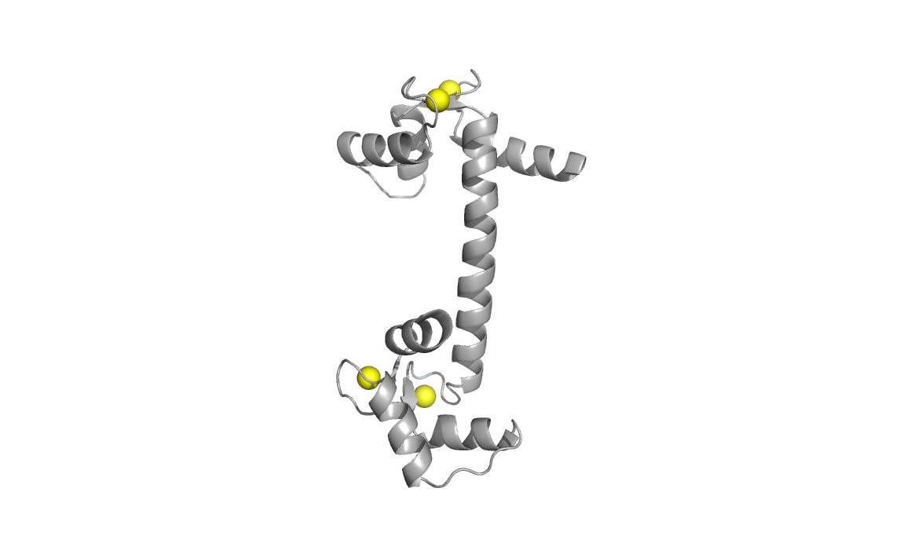
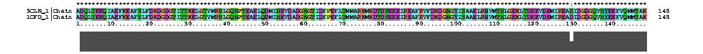
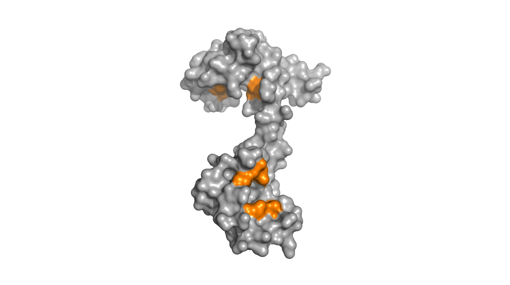

Calmodulin - a ubiquitous calcium-sensor protein
Calmodulin (CaM) is a small, dumbell shaped protein that functions as a
calcium-sensor in cells. It is a ubiquitous protein, being found in all
eukaryotic cells, and is a major component of signal transduction
pathways associated with calcium signalling.

Both globular ends of the protein, which are separated by a long
flexible loop/helix, can bind two calcium ions each (for a total of
four Ca2+ in total for a fully calcium-loaded calmodulin). Binding of
calcium is cooperative and induces a large conformational change in the
protein.
The long flexible inter-domain helix/loop is dynamic and the protein is
intrinsically dynamic (undergoing various conformational changes in the
apo, or calcium-free state). The protein can exist in an extended
(elongated) state or in a more compact state (shown in the images
below).

Structures used: 3CLN and 1CFD
Calcium-loaded calmodulin (3CLN, left) with divalent calcium ions shown as yellow spheres
Calcium-free calmodulin (1CFD, right)
Sequence alignment for the two structures.

The two conformations give rise to very distinct two-dimensional
backbone-amide NMR spectra (15N-HSQC). NMR is therefore an excellent
method to monitor conformational states of this protein.
Upon binding calcium, the protein undergoes conformational changes that
expose hydrophobic methionine residues. The images below show that in
the calcium-bound calmodulin (left), the hydrophobic methionine
residues (colored orange) are exposed and accessible to solvent whereas
in the calcium free calmodulin (right), these same methionine residues
are relatively buried and inaccessible.

The methionine residues; once exposed, are then poised to interact with
other binding partners. The binding between CaM and its binding partner
typically involves CaM wrapping itself around its partner with
hydrophobic interactions stabilizing the complex. It is in this way
that calmodulin can act as a calcium sensor and induce downstream
signalling processes.
A movie of calcium-loaded calmodulin bound to a peptide (PDB: 1CKK) is
shown below with the binding peptide in red, methionine residues in
orange, and calcium ions in yellow.
Serendipity in the biochemistry lab:
When expressing and purifying recombinant his-tagged calmodulin, it is
often isolated in its calcium-bound state due to its high affinity for
divalent cations. During my graduate work, I was looking to study the
protein in both conformations. Unfortunately, stripping the calcium
from calmodulin involved using an ion-chelating chromatography column,
adding additional steps to the purification process and inducing losses
in protein yield.
An interesting, and somewhat serendipidous discovery was made while I
was investigating the NMR spectrum for the calcium-loaded calmodulin in
various buffers. When using phosphate buffer, I kept obtaining an NMR
spectrum unlike what I was expecting. Initially, I suspected that
something went wrong with the prep, but on further investigation I was
pleased to find that I had generated apo-calmodulin (calcium-free CaM). This happens
because calcium phosphate has a very low aqueous solubility.
Therefore,
simply by preparing the protein in a phosphate buffer, I was able to
rapidly generate the calcium-free calmodulin without requiring the
otherwise more lengthy and involved chelating chromatography step.
Furthermore, there were no losses in material - quite convenient!
References:
Kitevski-Leblanc JL, Hoang J, Thach W, Larda ST, Prosser RS. (2013) ¹⁹F
NMR studies of a desolvated near-native protein folding intermediate.
Biochemistry 27;52(34):5780-9.